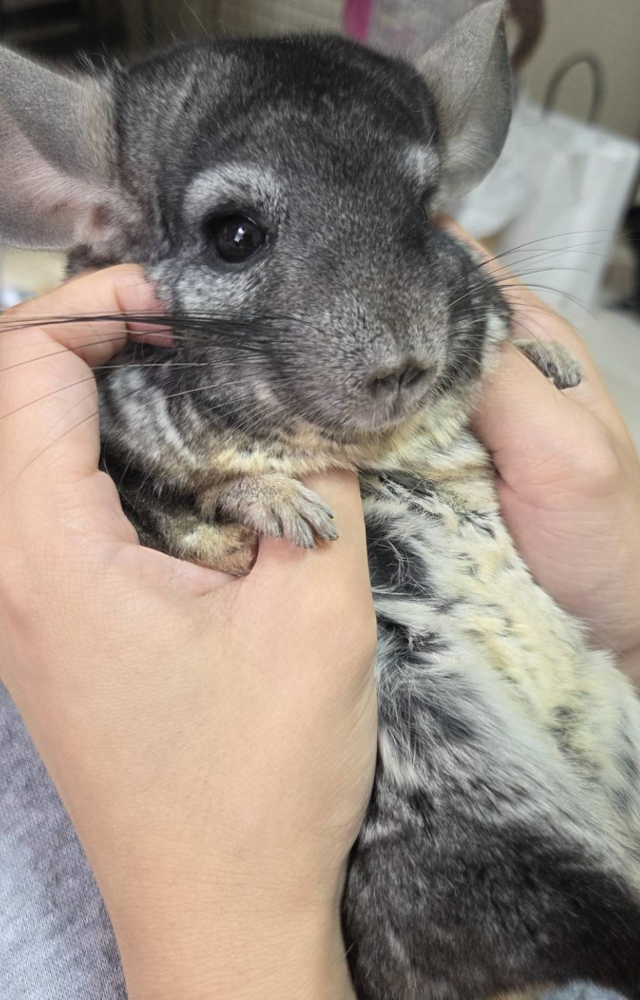

My Research
RESEARCH現在の研究
研究テーマ
系統的近縁種における超音波発声を介した配偶者選択と種間生殖隔離の比較解析
齧歯類を対象に、超音波発声（USV）を切り口として、 配偶者選択や種間の生殖隔離のしくみを比較しています。
▸ 学会ポスターを見る（PDF）
哺乳類全般の種差やその背景に興味があります。
現在は齧歯類を対象に、超音波発声（USV）を切り口に研究をしていますが、
対象の動物も切り口も増やしていきたいと考えています。
My Path
CAREER大学以降の歩み
熊本県出身
-
2015.04 – 2019.03宮崎大学 農学部 畜産草地科学科2015年4月 入学 ／ 2019年3月 卒業
-
2019.04 – 2021.03九州大学大学院 修士課程生物資源環境科学府 資源生物科学専攻 ／ 2021年3月 修了
-
2026.04 –宮崎大学大学院 医学獣医学総合研究科 博士課程医学獣医学専攻 ／ フロンティア科学総合研究センター 生物資源分野（現在 博士課程1年）
My Work
ACHIEVEMENTS論文・発表・資格
PAPERS ／ 論文（査読あり）
- Ogata, H., Tsukamoto, M., Yamashita, K., Iwamori, T., Takahashi, H., Kaneko, T., Iwamori, N., Inai, T., Iida, H. Effects of Calyculin A on the Motility and Protein Phosphorylation in Frozen-Thawed Bull Spermatozoa.
PAPERS ／ 論文（査読なし）
- 緒方穂波, 前山賢太, 林扶充, 仮屋博敬, 川辺敏晃, 名倉悟郎, 城ヶ原貴通, 篠原明男, 越本知大. 希少固有種アマミトゲネズミの実験動物化に向けた飼育ストレス評価の試み.
THESIS ／ 卒業論文
- 緒方穂波. 絶滅危惧種アマミトゲネズミ（Tokudaia osimensis）の飼育下におけるストレスと繁殖行動の評価.
PRESENTATIONS ／ 学会発表・受賞
- 緒方穂波, 前山賢太, 林扶充子, 仮屋博敬, 川辺敏晃, 名倉悟郎, 城ヶ原貴通, 篠原明男, 越本知大. 希少固有種アマミトゲネズミの実験動物化に向けた飼育ストレス評価の試み. 山内・半田賞 受賞
CERTIFICATION ／ 資格
- 1級実験動物技術者
Off Duty
ABOUT研究のほかの、わたし
-
HOBBY ／ 趣味バレーボール ／ ドライブ
-
FAVORITE ／ 好きな動物哺乳類全般（特に齧歯類と猫）
-
PET ／ ペットチンチラ「コロちゃん」（11歳）
